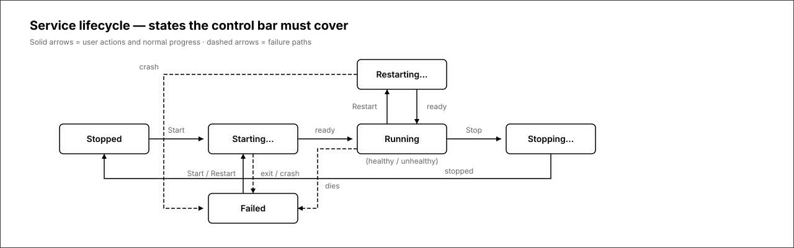
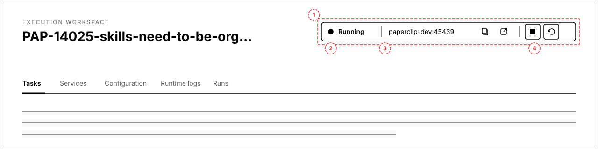
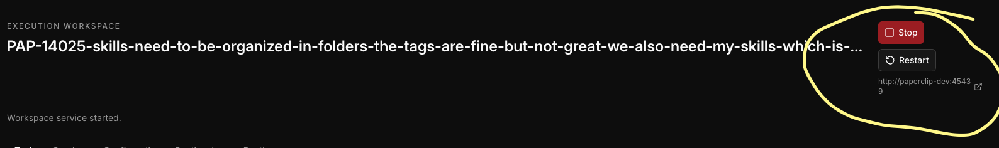
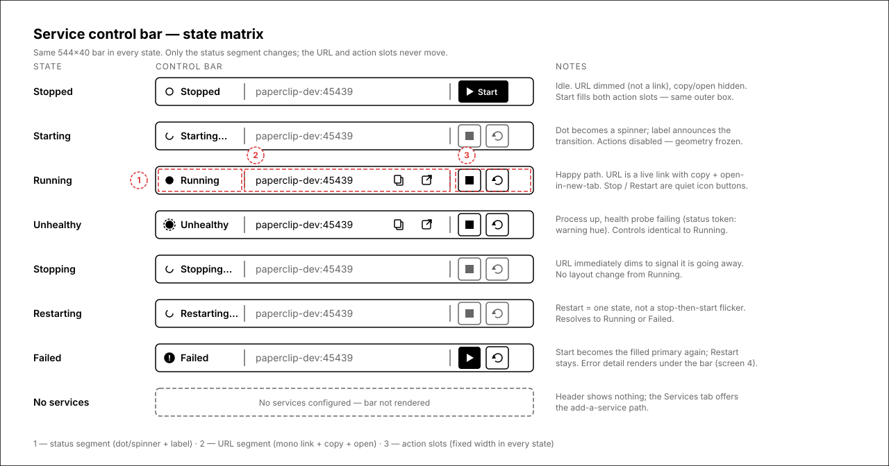
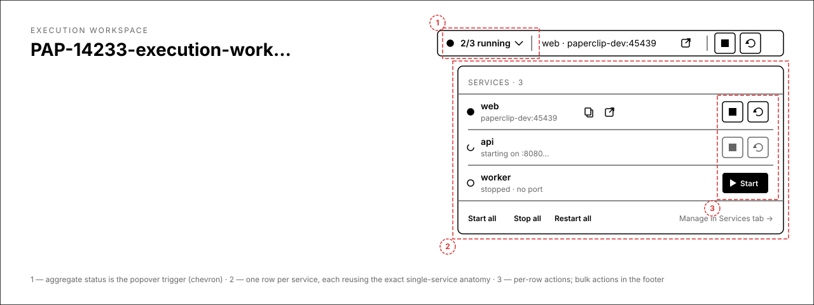
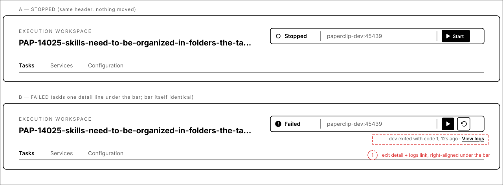
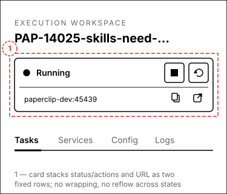

Execution workspace service controls
The current header cluster morphs per state: a red Stop + Restart stack when running, a lone Start when stopped, and a URL that wraps mid-port underneath. This proposal replaces it with one segmented control bar — status · URL · actions — whose geometry is identical in every state, so nothing ever jumps. Transitions are announced by the status segment (spinner + label), not by buttons appearing and disappearing.
Service lifecycle
Every state the control bar must render. Solid arrows are user actions and normal progress; dashed arrows are failure paths. The backend model is starting | running | stopped | failed plus a health probe (healthy | unhealthy | unknown); “Stopping…” and “Restarting…” are the in-flight mutation states the UI must also show.

1.Header context — running
The bar sits where today's button stack lives: right side of the workspace header. Three segments — status (dot + label), URL (monospace host:port with copy and open-in-new-tab), actions (Stop, Restart as quiet icon buttons). Total footprint is one 40px row.


Annotations
- 1 — the whole cluster becomes one segmented bar, right-aligned in the header.
- 2 — status segment: dot + short label. This is the only segment whose content changes between states.
- 3 — URL segment:
host:portin monospace, copy button, open-in-new-tab. Fixed width; long URLs truncate in the middle, never wrap. - 4 — action segment: two fixed 32px icon slots (Stop, Restart) with tooltips.
2.State matrix — all 8 states
The same bar in every state the model can produce: stopped, starting, running, running-but-unhealthy, stopping, restarting, failed, and no-services. The bar's outer geometry and segment boundaries are identical in all of them.

Annotations
- Stopped — hollow dot; URL dimmed and inert; Start is the filled primary, spanning both action slots.
- Starting / Stopping / Restarting — the dot becomes a spinner and the label says what's happening; both actions disable. No control is added or removed.
- Running — URL becomes a live link with copy + open; Stop and Restart are quiet outline icon buttons (destructive color reserved for confirm surfaces).
- Unhealthy — running controls, warning-hued dot with probe ring; label flips to “Unhealthy”.
- Failed — alert dot, Start returns as primary, error detail lives under the bar (screen 4).
- No services — bar is simply not rendered.
3.Multiple services
Workspaces can run several services (web, api, worker…). The header bar aggregates: “2/3 running”, the primary service's URL, and whole-workspace actions. The status segment opens a popover with one row per service — each row reuses the exact single-service anatomy.

Annotations
- 1 — aggregate status (“2/3 running”) with a chevron; clicking opens the popover.
- 2 — one row per service: dot, name, URL (or transitional text), copy/open when live.
- 3 — per-row actions mirror the single-service slots; footer offers Start all / Stop all / Restart all and a path to the Services tab.
4.Stopped & failed headers
Side-by-side proof that the header does not reflow: stopped and failed use the same box, same segments, same action-slot footprint. Failure adds exactly one right-aligned detail line under the bar — exit reason, recency, and a View logs link.

Annotations
- A — stopped: Start fills the action area; URL segment keeps its width with the configured port dimmed, so the coming-back-up transition doesn't shift anything.
- B / 1 — failed: the only addition is the detail line (“dev exited with code 1, 12s ago · View logs”) under the bar. The bar itself is byte-identical in geometry to every other state.
5.Mobile
Below the small breakpoint the bar becomes a two-row card: status + actions on top, URL row underneath. Same fixed geometry rules — rows never wrap or reflow between states.

Annotations
- 1 — the card stacks the bar's segments into two fixed rows; the URL gets a full row so it never wraps mid-port.
- Transitional and failed states behave exactly as on desktop: spinner + label in row one, detail line appended below the card when failed.
break-all URL text is what produced the wrapped “:4543 / 9” in the issue screenshot; a dedicated row with middle-truncation fixes it at every width.Open questions
- Stop confirmation — Stop is currently instant. Keep it instant (dev-loop tool), or require a confirm popover when the workspace has an active run attached?
- Aggregate actions — with multiple services, header Stop/Restart act on all services (per-service control lives in the popover / Services tab). Acceptable?
- Unhealthy wording — proposal shows “Unhealthy” as the label while the process is up. Alternative: keep “Running” with a warning dot only.
- Jobs — one-shot jobs (
kind: "job", Run action) stay in the Services tab and are intentionally excluded from the header bar. Confirm.